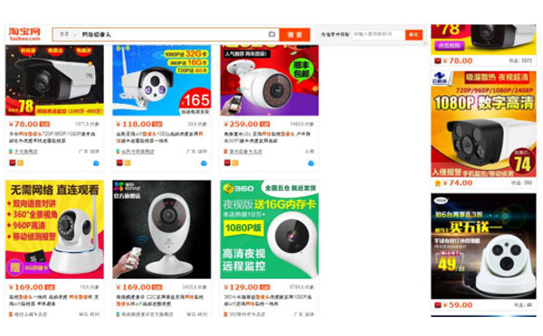

在软硬件实力兼备的大牌厂商们的突袭及低价围剿下，昔日风光无限的传统厂商纷纷感叹家庭网络监控市场已然红海一片时，一款由知名法国设计师Vivien Muller 设计的远程智能监控器ULO 横空出世，该产品以其精巧讨喜的外形和丰富的功能设计，还没有发布已然俘获了大批发烧友的期待与支持，粉丝们已然不管其149欧元（约合人民币1100元）的众筹价格了。
ULO众筹发布价格
反观国内市场，监控摄像头以这样的价格显然不易走进寻常百姓家，就产品本身而言，外观上大同小异 —— 多数厂家在通用公模基础上简单修改甚至直接贴牌就推向市场，软件支持更是严重滞后，因为一套稳定的监控系统的研发维护需要投入的是远高于硬件的研发及运营成本。结果就是，在智能网络摄像头家庭安防市场，消费者就只能看到千篇一律外观设计，软件功能单一，粗糙的安防产品。如果没有购买前的实际体验，消费者很难辨别摄像头的优劣，最终只能向低价和大牌靠拢，而那些没有大品牌做背书的产品市场将被一再挤压，难以成长壮大。
国内某宝搜索“网络摄像头”首页
对于平均价格已被打压到人民币149元上下的国内商家来讲，在同质化严重的低价沼泽里挣扎再久也难以逃脱被消亡的结局，更奢谈利润空间，当下没有什么比软硬件升级和盈利模式优化更为迫切了！商家要做的不仅是跟随模仿ULO 、360小水滴，小米等摄像头的硬件及外观，更重要的是做一款能了解用户、留住用户，让大众真正愿意买单的监控摄像头，而差异化的、可运营的软件方案就是当前厂家实现持续盈利的突破点。
基于此，“众云视频”开放Linux、i OS、Android、Windows源代码，为包括IPC在内的物联网硬件及方案商提供实时视频传输、存储与分析等一站式解决方案，从而为用户提供更丰富的产品线组合。该方案支持远程视频连接、双工对讲、高清夜视、运动侦测、云台控制等行业通用功能，以及云存储、云日志、缩时摄影、人脸检测等可持续盈利的深度定制的云服务（更多功能下载掌上看家软件即可体验）。从产品功能设计，到后期的销售及运营等一整套方案的全面交付，能够极大的缩短产品研发上线周期，控制软件研发成本，累积行业客户，扩大品牌影响，实现可持续盈利。
“众云视频”方案构成模块及意义
区别于大多数IPC厂商对接的仅有传输和存储功能的云服务，“众云视频”推出的云服务，不仅具备以上功能，还能基这些功能深度开发扩充特色高级功能，如云日志，缩时摄影等；方案中集成了丰富的主流线上支付方式，打通线上收费渠道，通过后台管理系统，厂商可以清楚的了解服务销售情况，根据数据分析来调整运营方法，促进硬件及其软件服务的付费转化，而软件功能持续升级优化，又能让产品持续保持竞争力。
“众云视频”提供的付费功能后台管理系统
在服务及用户体验至上的时代，软硬件能力都是不可忽视的要素。高品质的硬件能是赢得消费者青睐的敲门砖，丰富的的功能设计和可持续的运营才是赢得消费者忠实与信赖的必杀技。在和用户互动中升级和完善出来的产品，才是符合市场真正需求并持续带来利润回报的好产品。 该方案是已成功运用于软件掌上看家（AtHome Camera），掌上看家是南京云恩通讯科技有限公司旗下一款具有技术代表性的监控软件，包括丰富的基础免费功能和一系列高级付费功能，面向全球发布，具备成熟的市场运营方法和数据分析能力，累计用户已突破千万，付费转换率及市场好评率远远高于行业平均水平 。
掌上看家界面图
据悉，包括中兴小兴看看，360小水滴，电信天翼看家等业内多家知名企业已于“众云视频”达成战略合作，新一轮的行业洗牌已拉开序幕。及时抓住市场机遇，才有望在这场淘汰赛中优胜存续，发展壮大自有品牌。
原创文章转载请注明：www.zvcloud.com